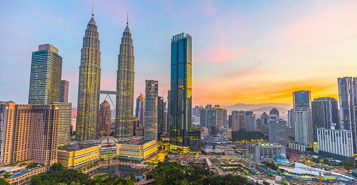
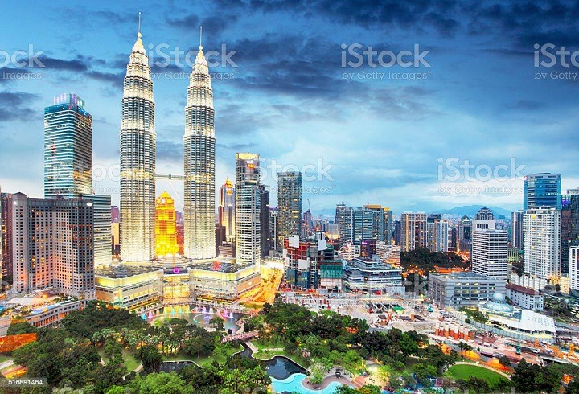
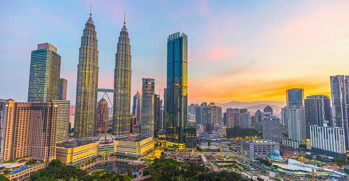
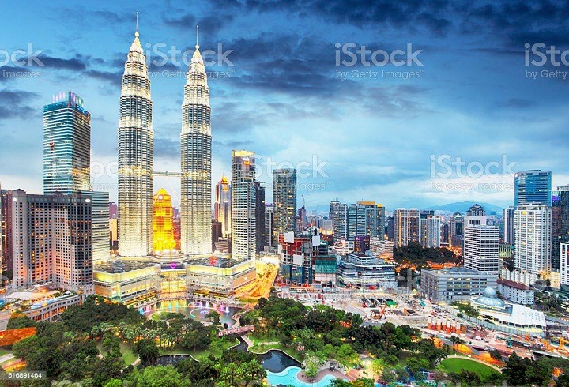
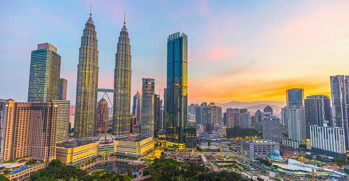
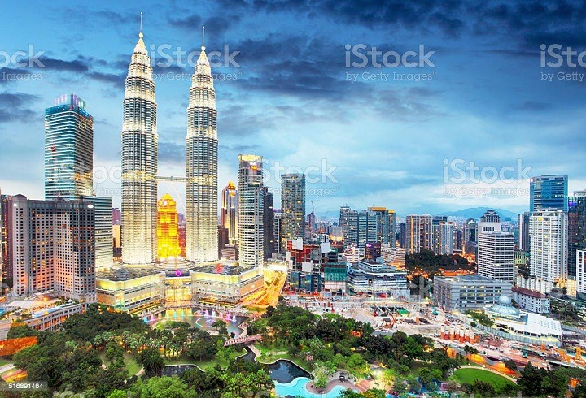

Kuala Lumpur est la capitale de la Malaisie. Son panorama moderne est dominé par les tours jumelles Petronas, hautes de 451 m, gratte-ciels aux façades de verre et d'acier ornées de motifs islamiques. Les tours sont dotées d'un pont et d'une plate-forme d'observation accessibles au public. La ville compte aussi des monuments datant de l'époque coloniale britannique, comme la gare de Kuala Lumpur et l'édifice Sultan Abdul Samad
Élancées dans le ciel tropical comme deux fusées de verre et d’acier, les Petronas Towers, les plus hautes tours jumelles du monde, représentent bel et bien la fulgurante réussite économique de la Malaisie. À Kuala Lumpur, on les voit de partout. Inspirées dans leur architecture par la tradition de l’islam asiatique, elles dominent fièrement le quartier des affaires. Au-delà de cet îlot de prospérité s’étend l'immense agglomération de Kuala Lumpur, nourrie par l’idée de développement. Les gratte-ciel y poussent comme des champignons. D’une saison à l’autre, des quartiers entiers surgissent de terre, des chemins se muent en avenues, des avenues en autoroutes – au point que les GPS y perdent fréquemment leur latin... Kuala Lumpur, KL (comme on la surnomme) est une capitale en expansion permanente. Malgré cela, le centre-ville conserve quelques îlots à taille humaine. On y croise encore de grandiloquents monuments de l’époque coloniale, magnifiés par une touche moghole ou mauresque. À deux pas, Chinatown et Little India, cœurs vibrants de la cité, alignent leurs devantures un peu désuètes, tandis que souffle sur la ville l’appel du muezzin et un vent chargé de l’encens des temples chinois. Voilà bien un des charmes de Kuala Lumpur, cité multiraciale, où cohabitent relativement bien des ethnies très différentes. Les Chinois prospèrent grâce au commerce, les Malais administrent et grognent, parfois, de voir les premiers s’imposer économiquement, et les Indiens regardent le match. Cette mosaïque ethnique est des plus surprenantes.

